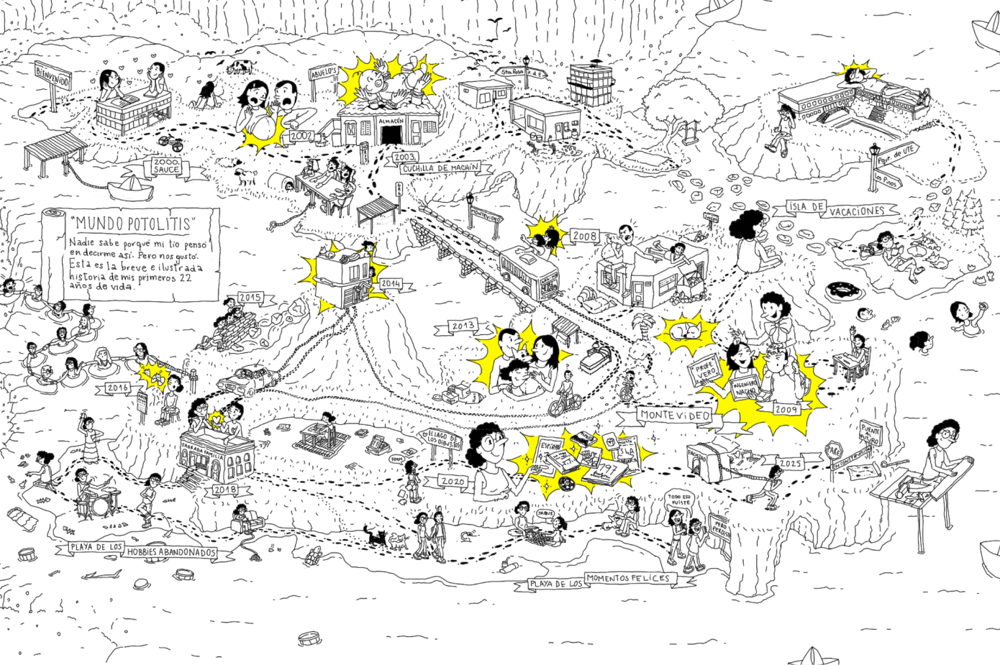

Cecilia “Cebra” Braña Llanes
Mi pasatiempo favorito es la construcción de mi árbol genealógico. Estos son los apellidos de mis antepasados hasta la sexta generación. Es para mí un motivo de orgullo saber que hasta la fecha he podido encontrar los nombres y apellidos de ciento ocho antepasados hasta la sexta generación (solo me faltan siete: si tenés información sobre la familia Ottón, parientes de mi bisabuela Ángela Zulema Ottón, me haría muy feliz que te contactes conmigo para ayudarme a completar esos huecos). En adelante, los huecos son cada vez más: sólo he recolectado setenta y tres nombres completos y quinientos veinticuatro apellidos hasta la duodécima generación. De los cuatromil noventa y seis antepasados que todos tenemos hasta la duodécima generación, he podido recolectar los apellidos de seiscientos treinta y dos, un quince por ciento, y entre ellos, tengo los nombres completos de ciento ochenta y uno, apenas un cuatro por ciento. No es poca cosa. Tampoco es tanta. Pero me pareció divertido traerlo acá, porque no sé en qué otro contexto podría alardear de este logro.
Obra
No hay proyectos con esta combinación de filtros.
Biografía, trayectoria, exposiciones y reconocimientos
Mi pequeña biografía ilustrada
Realizada en el marco del curso Formación Artística Aplicada, Módulo N°2, Síntesis Visual, de la Licenciatura en Artes Visuales de la Universidad Católica del Uruguay.
2003 (2025)
Declaración de artista
Statement
Soy artista visual emergente y artista gráfica de profesión, pero éstas no son para mí dos facetas paralelas: abordo mis trabajos por encargo con el mismo entusiasmo y método que mi obra, porque también lo es. Una y otra conviven en mi trabajo diario y se nutren entre sí. He encontrado un territorio para mi desarrollo como artista gráfica en la escena emergente de la cultura local. Allí hallo la posibilidad de combinar las prácticas del diseño, ilustración y fotografía en la creación de piezas gráficas a la par que contribuyo a la visibilización de mis pares. En el plano más personal e íntimo, me he lanzado a la tarea de recoger las historias mínimas, cotidianas: la anécdota familiar y barrial tanto propia como ajena, en el entendimiento de que existe un valor casi patrimonial en estas historias, las que no pasan a la Historia, que merece ser preservado.